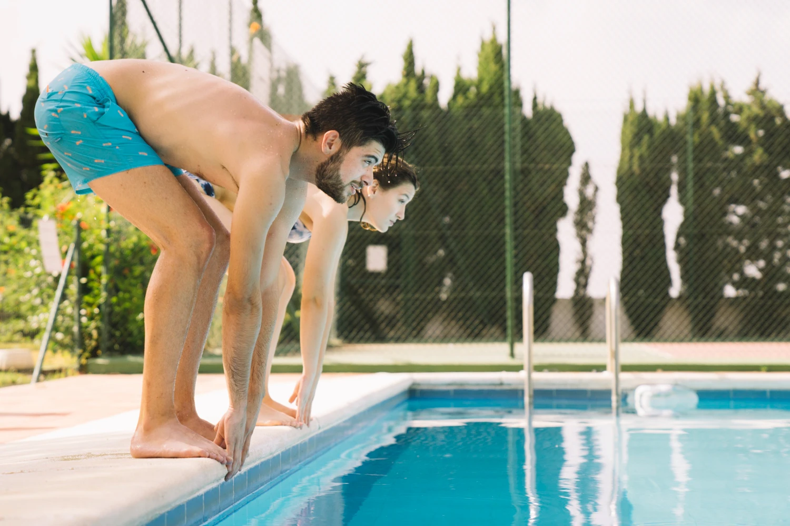

El agua verde no llega de un día para otro: es el resultado de varios días seguidos de descuido. Con una rutina preventiva simple gastas la mitad en químicos, evitas paros forzosos de la piscina y disfrutas un agua cristalina todo el verano. Esta es la guía completa para que las algas nunca aparezcan.
Recuperar una piscina con algas cuesta entre 5 y 10 veces más que mantenerla limpia. La buena noticia es que la prevención no requiere productos especiales ni horas de trabajo: solo entender qué hace que las algas aparezcan y cortar esos disparadores antes de que se conviertan en problema.
¿Por qué aparecen las algas?
Las algas son organismos microscópicos que están presentes en el ambiente: caen con el viento, las trae el agua de lluvia, las suben los bañistas en su piel. Cuando entran a una piscina, necesitan tres condiciones para reproducirse:
- Luz solar: energía para hacer fotosíntesis.
- Cloro bajo: menos de 1 ppm de cloro libre les da margen para multiplicarse.
- pH desequilibrado: sobre 7.8 reduce drásticamente la efectividad del cloro.
Si quitas cualquiera de las tres, las algas no prosperan. La estrategia preventiva consiste en atacar las tres simultáneamente con muy poco esfuerzo.
1. Cloración constante entre 1 y 3 ppm
El error más común es esperar a que el cloro "se gaste" antes de reponerlo. En realidad, el cloro libre debe mantenerse siempre entre 1 y 3 ppm, sin bajar nunca de esa franja.
La forma más segura de lograrlo es con tabletas de disolución lenta en un dosificador flotante o en el skimmer. Una tableta de 200 g por cada 20 m³ cada 5 a 7 días suele bastar. En semanas de mucho calor, uso intensivo o tras una fiesta, reduce el intervalo a 3-4 días.
2. pH entre 7.2 y 7.6 (no negociable)
Un cloro mal acompañado de pH alto pierde más del 60 % de su poder desinfectante. Es como echar el doble de cloro a precio doble y obtener la mitad del resultado.
- Mide pH al menos 2 veces por semana con test kit o tiras reactivas.
- Si el pH se va sobre 7.8, ajusta con Baja pH. Una dosis pequeña pero a tiempo evita correcciones drásticas después.
- Después de una lluvia fuerte (que es ácida), también mide: a veces el pH baja demasiado.
3. Algicida preventivo, no curativo
El gran malentendido del algicida: se usa antes de que aparezcan las algas, no cuando ya están. Aplicado preventivamente, su dosis es baja y el costo es mínimo. Aplicado curativamente cuesta 5 veces más y necesita días de tratamiento intensivo.
La regla práctica:
- Algicida concentrado en dosis preventiva cada 10-15 días. Una dosis de 30-50 ml por cada 10 m³ suele ser suficiente.
- Duplicar la dosis antes de viajar, en semanas de lluvia, o si la piscina queda sin uso por varios días.
- Triplicar la dosis antes de cerrar la piscina al final de la temporada.

Algicida Concentrado
El seguro anti-algas para tu piscina. Una dosis cada 10-15 días evita el agua verde y reduce el consumo de cloro.
Comprar Ahora4. Filtración efectiva (6-8 horas/día)
La filtración hace dos cosas para prevenir algas: distribuye el cloro de manera homogénea y retira las esporas que aún no se han fijado. Sin filtrado, el cloro se concentra en un sector y deja zonas muertas perfectas para que las algas se aferren al revestimiento.
- Horario: 6 a 8 horas diarias en temporada alta. Idealmente entre las 10 y las 18 horas, cuando el sol degrada más cloro.
- Retrolavado: cada 2 semanas, o cuando el manómetro suba más de 5 psi sobre el normal.
- Limpieza del filtro: revisa los cartuchos / arena al menos una vez al mes.
5. Cepillado físico semanal
Las algas se aferran al liner, las escaleras, las esquinas. El cloro no las despega por sí solo. Una vez por semana, cepilla todas las superficies: paredes, fondo, escalera, esquinas, y especialmente las zonas donde el agua circula menos (debajo de la escalera, esquinas profundas).
Tarea de 5 minutos que evita el 80 % de los problemas de algas que llegan a ser visibles.
Higiene del entorno: menos contaminación
Cada cosa que cae al agua —hojas, polen, protector solar, sudor— consume cloro y aporta nutrientes a las algas. No puedes eliminar el ingreso de contaminantes, pero sí puedes minimizarlo:
- Retira hojas con la red todos los días en otoño y primavera.
- Pide a los bañistas que se duchen antes de entrar (reduce sudor y bronceadores).
- Mantén el borde de la piscina limpio: el barro de la pisada es fuente directa de algas.
- Si hay árboles cerca, considera podarlos o instalar una malla anti-hojas.

"Una piscina con algas casi nunca es producto de un solo error. Es la suma de pequeñas omisiones a lo largo de 2 o 3 semanas. La prevención es una rutina semanal de 15 minutos, no un acto heroico."
¿Y si ya aparecieron? Tratamiento exprés
Si llegaste tarde y ya ves manchas verdes o agua turbia, haz esto en 24-48 horas:
- Ajusta el pH a 7.2 (lo más bajo del rango ideal). El cloro funciona mejor con pH bajo.
- Cepilla a fondo todas las superficies para despegar las algas.
- Aplica cloro shock hasta llegar a 8-10 ppm de cloro libre.
- Triplica la dosis de algicida normal.
- Filtra 24 horas continuas el primer día.
- Retrolava el filtro al día siguiente, porque va a estar saturado.
- Mide cloro y pH dos veces al día hasta que el agua vuelva a estar clara.
Errores comunes que disparan algas
- Dejar la bomba apagada en semanas de calor. Sin movimiento, el cloro se queda en un lado.
- Aplicar algicida solo cuando ya hay algas. El precio se quintuplica.
- Ignorar el pH durante semanas. Un pH 8 es virtualmente equivalente a no tener cloro.
- Cargar todo el cloro de golpe los lunes. El cloro se evapora; debe ser dosificación continua, no en lotes.
- No cepillar. Las algas se aferran, no se "disuelven" en el cloro.
Resumen: checklist anti-algas semanal
- Reponer tabletas de cloro (mantener 1-3 ppm)
- Medir pH 2 veces (objetivo 7.2-7.6)
- Dosis preventiva de algicida cada 10-15 días
- Filtrar 6-8 horas diarias
- Cepillar paredes, fondo y escalera
- Retirar hojas y suciedad superficial
- Revisar manómetro y retrolavar si corresponde
Con esta rutina simple, las algas no son un problema: son una posibilidad teórica. Si quieres tener el seguro completo en un solo lugar, arma tu kit anti-algas con cloro tabletas + algicida + baja pH y déjalo todo cubierto para los próximos 3 meses.